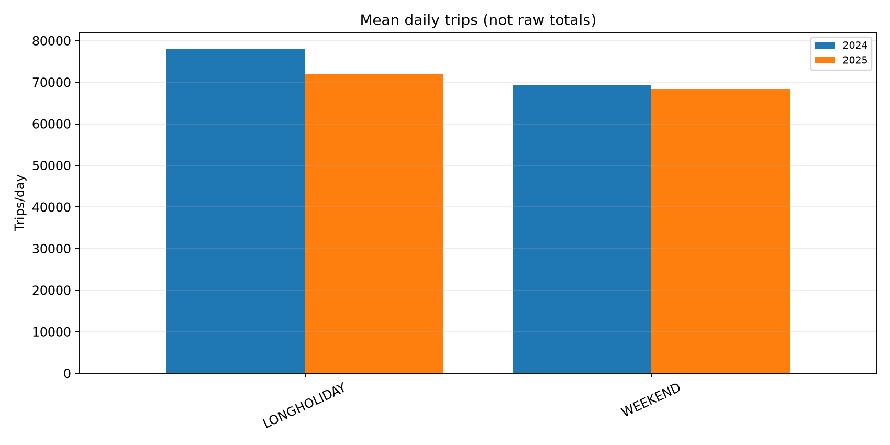
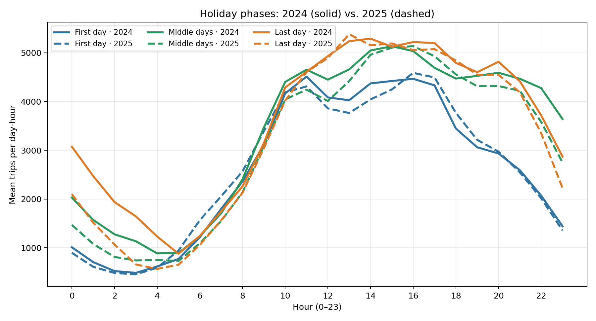
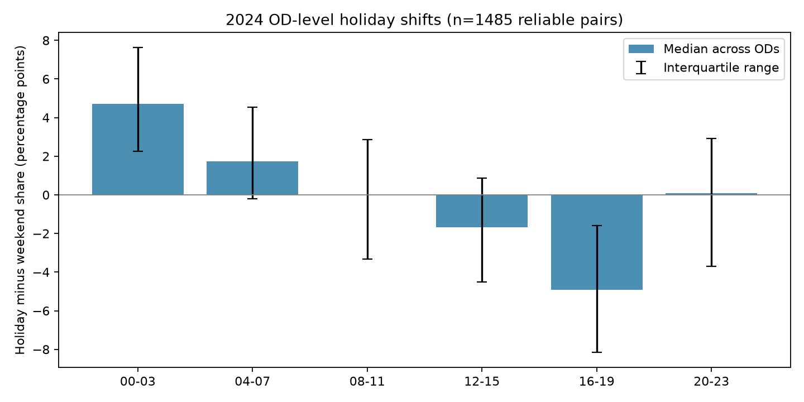
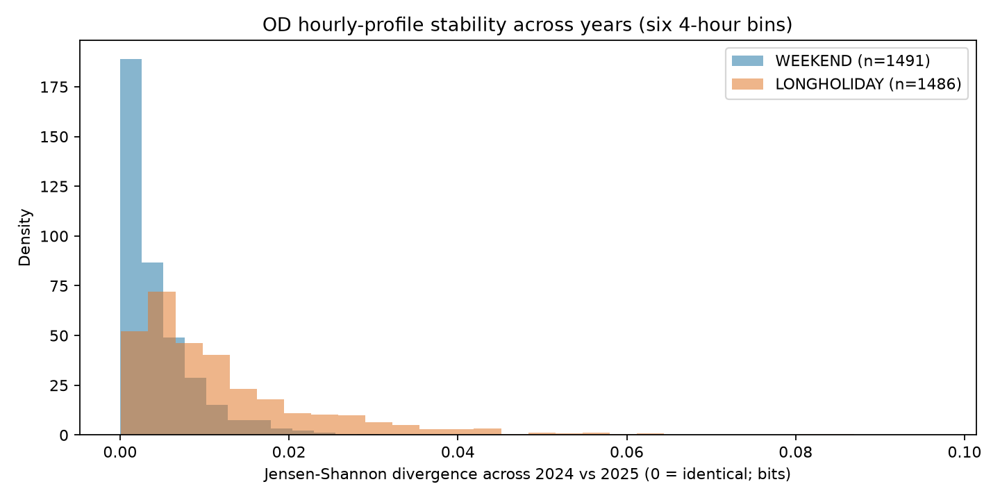
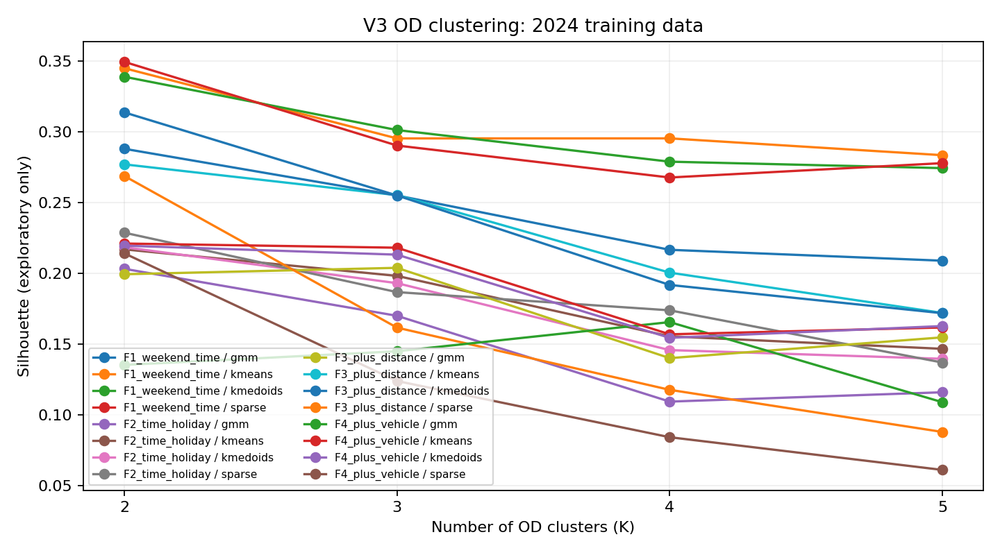

一、V3_LITE 與 V2_LITE 的差異
V2_LITE 保留 2024–2025 年研究路段的旅次資料；V3_LITE 則聚焦於「週末及連續假期」的交通需求，並將壅塞標籤改以四支 VD 的加權壅塞比例建立。原始 V2 資料保留，不因 V3 篩選而被覆寫。
二、假日選取與 DayType
| DayType | 研究處理 | 2024–2025 日期數 |
|---|---|---|
WEEKEND | 納入：一般週六、週日 | 184 天 |
LONGHOLIDAY | 納入：連續假期 | 46 天 |
STANDALONEHOLIDAY | 不納入主要研究樣本：單日假期 | 5 天 |
WEEKDAY | 不納入主要研究樣本：一般平日 | 496 天 |
納入日期分布：2024 年 113 天、2025 年 117 天，合計 230 天；每一日保留 288 個五分鐘時段。所有日期以 BottleneckTime 所屬日判定，沒有額外的 14:00–20:00 旗標。
DayType；V3_DayType 是處理程式曾額外建立的日期級標籤，目前已決定從最終使用資料中移除，避免重複。現有建置程式仍可能輸出此欄位，實際產檔時應同步刪除或改名，不宜只靠網頁說明視為已完成。日期稽核顯示 731 天中未發現同一日期的 DayType 衝突，且本次 V3 日曆分類與原始 OD 分類相同；但 46 天 LONGHOLIDAY 的官方日期對照仍可作獨立複核。
三、四支 VD 與空間權重
正式 V3 的 Y 使用交流道間候選區段之代表長度權重（四站權重總和為 1）。K61.000 屬研究範圍外延測站，不納入本版四站 Y。
| VD 里程 | 測站類型 | 空間權重 wj | 用途 |
|---|---|---|---|
| K69.510 | LOOP | 0.0417 | 四站共同描述龍潭 → 大溪北向的壅塞空間範圍 |
| K65.990 | RS | 0.4600 | |
| K63.990 | LOOP | 0.3600 | |
| K61.670 | RS | 0.1383 |
權重是依候選區間分配的代表長度，並非已經官方核定的交流道精確起訖里程；正式報告應保留此空間界線假設。
四、三類壅塞指標 Y
每五分鐘先標記有效測站是否低速：L(j,t) = 1[Speed(j,t) < 40 km/h]。若有測站缺失，僅對當下仍有效的測站重新正規化權重。
O(t) 表示時間 t 有有效速度觀測的 VD 集合。
| Y | 條件 | 解讀 |
|---|---|---|
| 0 | Ct(w) = 0 | 未偵測到壅塞 |
| 1 | 0 < Ct(w) < c | 局部壅塞 |
| 2 | Ct(w) ≥ c | 大範圍壅塞 |
c = 0.50，另保留 0.25 與 0.75 做敏感度分析。只要四支 VD 中至少一站有有效速度就計算 Y；只有四站同時無效，Y 才記為缺失（NA），絕不視為 Y=0。建議同時保留 n_valid_vd 與可用權重總和，方便未來比較「只有一站有效」與「四站皆有效」的結果穩健性。
五、正式研究日的缺值概況
缺值分母為所選假日全天「每五分鐘預期 1 格」；不是只統計已出現在檔案中的列，也不是每站速度的平均缺值率。
| 年度 | 假日 | 預期 5 分鐘格 | 四站皆有效 | 至少一站有效（Y 可計算） | Y 缺失率 |
|---|---|---|---|---|---|
| 2024 | 113 | 32,544 | 30,167 | 31,024 | 4.67% |
| 2025 | 117 | 33,696 | 32,527 | 33,423 | 0.81% |
正式建模可比較「原始不補」、「只補短缺」及「完整補值」三種資料層級；是否補值應由後續預測表現和敏感度分析決定。
六、EDA｜V3 節假日 OD 交通需求（已完成）
分析基於 2024–2025 年的 230 個研究日、16,068,709 筆旅次及 11,740 組 OD。同時檢查日期數、總量、單日平均、日內分布及跨年穩定性，以避免把「樣本天數較多」誤解成「車流較高」。
| 年度 | DayType | 天數 | 總旅次 | 平均旅次／日 |
|---|---|---|---|---|
| 2024 | WEEKEND | 98 | 6,787,300 | 69,258 |
| 2024 | LONGHOLIDAY | 15 | 1,171,680 | 78,112 |
| 2025 | WEEKEND | 86 | 5,876,665 | 68,333 |
| 2025 | LONGHOLIDAY | 31 | 2,233,064 | 72,034 |
主要圖表




2024 連假與一般週末：時段比例的位移
以下是 1,485 組觀測量足夠的 OD，各自計算「連假時段旅次占比 − 一般週末占比」後的跨 OD 中位數，單位為百分點（pp），不是整體交通量增減。
| 時段 | 連假－週末中位數（pp） | 初步解讀 |
|---|---|---|
| 00–03 | +4.72 | 深夜占比增加 |
| 04–07 | +1.74 | 清晨占比增加 |
| 08–11 | −0.01 | 中位數接近不變 |
| 12–15 | −1.69 | 中午至下午占比減少 |
| 16–19 | −4.91 | 傍晚占比明顯下降 |
| 20–23 | +0.10 | 晚間差異不明顯 |
OD 日內分布跨年比較（六個四小時區間的 Jensen–Shannon divergence，0 代表相同）：一般週末中位數約 0.0027（1,491 組），連假約 0.0083（1,486 組）。表示在此尺度下週末分布跨年較相似；不代表每個 OD 都相同。
另外，OD 距離中位數與連假／週末每日平均旅次比值的對數之 Spearman 相關，2024 年約 0.666、2025 年約 0.621。這是關聯性，距離欄位單位與交通目的仍需複核。
分群前的 OD 篩選
| 2024 年最低旅次門檻 | 保留 OD 數 | 涵蓋 2025 旅次 |
|---|---|---|
| ≥ 100 | 2,285 | 96.86% |
| ≥ 300（Pilot） | 1,493 | 95.07% |
| ≥ 500 | 1,180 | 93.55% |
OTHER，不把它們直接刪除。其他 EDA 說明。七、OD 分群｜2024 Pilot（已完成）
對 2024 年 1,493 組高頻 OD，測試 4 組特徵（F1–F4）× 4 種方法 × K=2–5，共 64 組候選設定，並檢查三次重啟的群組穩定性。此階段是非監督式分群品質檢查，還不能宣稱哪一組最會預測壅塞。
| 代表設定 | Silhouette | 重啟穩定 ARI | 用途 |
|---|---|---|---|
| F1／Sparse K-means／K=2 | 0.349 | 1.000 | 純時間型態基準 |
| F1／K-means／K=2 | 0.345 | 0.915 | 一般 K-means 基準 |
| F2／K-means／K=3 | 0.198 | 1.000 | 加上連假反應 |
| F3／K-means／K=3 | 0.255 | 0.983 | 再加旅次距離 |
| F4／K-means／K=3 | 0.218 | 0.996 | 再加車種結構 |

下一階段：提前 15 分鐘預測大範圍壅塞
每 5 分鐘產出一筆預測，以時間 t 已知資訊預測 Y(t+15min)，即往後第 3 個五分鐘格；比較 Logistic Regression、XGBoost、LightGBM：
| 特徵組 | 內容 | 比較目的 |
|---|---|---|
| B0 | 時間、日曆、當下／歷史 VD、當下可得氣象 | 不使用 OD 的基準模型 |
| B1 | B0 ＋ 整體 OD 車流量 | 測試總需求是否有效 |
| B2 | B0 ＋ 各分群 OD 車流量 ＋ OTHER | 測試分群是否增加預測資訊 |
時間切分：2024 年依時間向前驗證、決定 F／方法／K 與參數；2025 年保留做最終測試。主指標為 Y=2 的 PR-AUC（Average Precision），並報告 Recall、F1、macro-F1、誤報率；所有特徵都必須能在 t 時點取得，不得使用事後才確認的旅次資訊。
c=0.50，待敏感度分析複核。預測實驗架構。八、V3 主要輸出與後續研究
| 輸出資料 | 觀測單位／用途 |
|---|---|
V3_LITE_OD_TRIPS.parquet | 一列一筆節假日 OD 旅次；保留旅次、日期與氣象等欄位。最終版只保留一套 DayType。 |
V3_OD_5MIN_BY_PAIR.parquet | 每五分鐘 × OD 起訖組合 × 車種的旅次數；作為分群後車流量的建模輸入。 |
V3_LITE_VD_4SITES.parquet | 每五分鐘 × 四支 VD 的速度、佔有率與觀測有效性。 |
V3_Y_5MIN.parquet | 五分鐘三類壅塞標籤；正式使用「至少一站有效就可計算 Y」的重建版本。 |
V3_calendar_focus_dates.csv | 納入研究的 230 個日期、DayType 與稽核來源。 |
VD_missing_*.csv | 依日期、測站、月份及缺失連續區間的品質報表。 |
- 已完成 2024 年 OD 分群 Pilot：K-means、K-medoids、GMM、Sparse K-means 與 K=2–5 的共 64 組候選比較。
- 以五分鐘 OD 群組車流量／占比作為預測特徵，與四站 VD 的 Y 對齊。
- 待執行 2024 時序驗證與 2025 最終測試；最佳 K 以 Y=2 的 PR-AUC 等預測績效判定，而不是只依 Silhouette。
- 比較有無補值、不同 c 及有效 VD 站數的敏感度，並避免把事後才知道的交通資訊當作即時預測輸入。